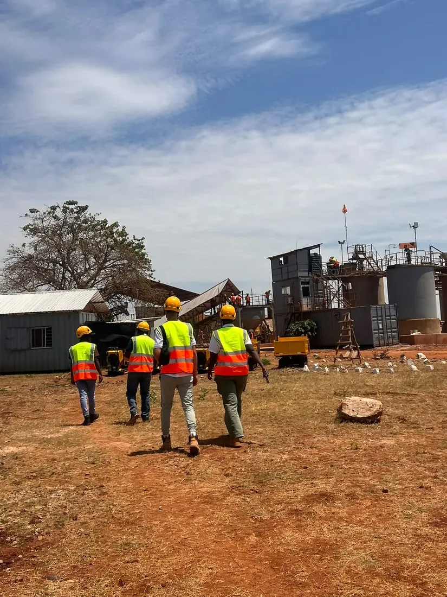
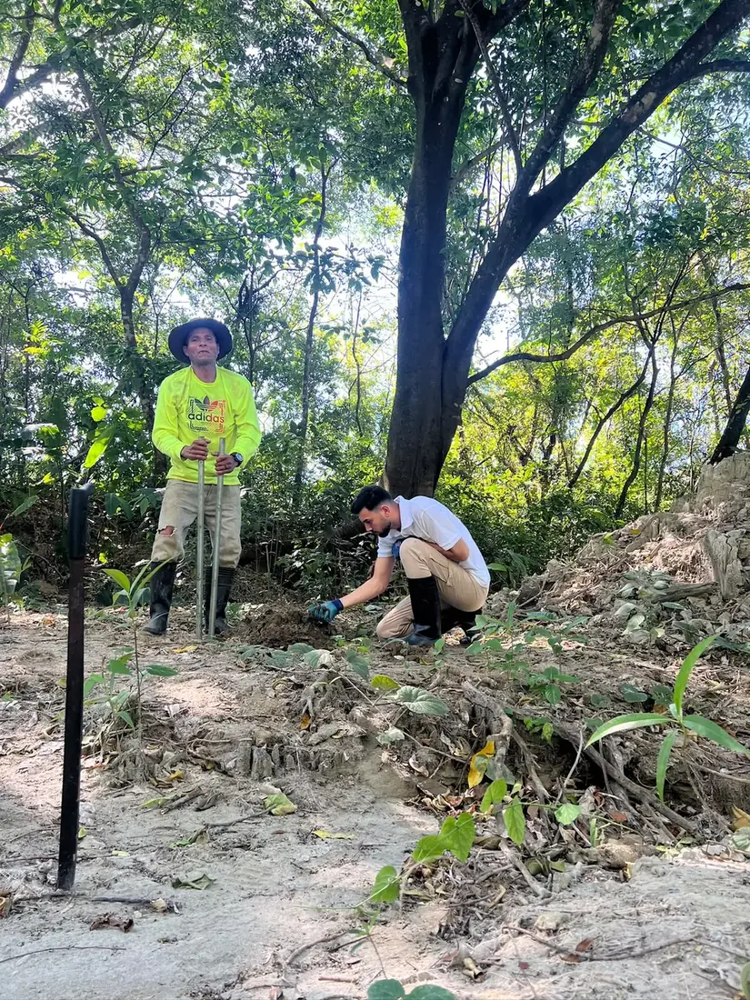

Shaul Akav
Fundador y propietarioVisión, capital y crecimiento
Miles de millones de toneladas de material ya extraído esperan en escombreras y depósitos. Recuperamos de ellos metales valiosos con tecnología verde y desarrollamos minas, en 18 países de cuatro continentes.
El Yad Harutzim es una empresa israelí con sede en Ashdod. Tomamos un activo físico complejo, una mina, una escombrera o un envío de metal, y le extraemos su valor, de principio a fin.

Un activo minero en operación en Nyarugusu, Tanzania. El mineral se tritura, se muele en un molino de bolas y se separa en una planta CIP.

Una tecnología verde que separa y recupera metales de relaves y materiales mineros. Funciona a temperatura y presión ambiente, sin cianuro ni disolventes orgánicos, y convierte los residuos mineros en un recurso con valor económico.

Compra directa a productores de Uganda, Zambia y Tanzania. Cada lingote se pesa y se documenta, y sigue una logística controlada hasta la refinería.
Rango en la literatura: 7–14 mil millones de toneladas al año. Fuentes: Global Tailings Review; Nature Reviews Earth & Environment (2024).
Fotos y vídeos de los lugares donde trabajamos. Vamos nosotros mismos, antes de cada operación y durante ella.




Visitamos el lugar, revisamos la infraestructura y nos reunimos con los equipos locales.
Se recogen y documentan muestras de suelo, mineral y material extraído.
Trituración, molienda y separación, o recuperación verde de material ya extraído.
Pesaje, documentación y logística controlada hasta la refinería.
Solo empresas registradas. Cuéntenos el proyecto, el material o el metal que busca, y le responderemos con detalles y condiciones.